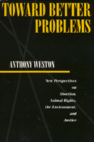

<body bgcolor="#FFFFFF" text="#000000" link="#0000FF" vlink="#CC0000" alink="#CC0000"><center><hr width="350" size="1" align="center" noshade>A philosopher proposes a pragmatic approach to tackle contemporary moral problems<hr width="350" size="1" align="center" noshade><p><a href="https://cdcshoppingcart.uchicago.edu/Cart/ChicagoBook.aspx?ISBN=9780877229476&&PRESS=temple" target="_top">Buy this book!</a> | <a href="https://cdcshoppingcart.uchicago.edu/Cart/Cart.aspx?PRESS=temple" target="_top">View Cart</a> | <a href="https://cdcshoppingcart.uchicago.edu/Cart/Cart.aspx?PRESS=temple" target="_top">Check Out</a></p><p></p></center><!--none//--><h1>Toward Better Problems</h1>
<H2>New Perspectives on Abortion, Animal Rights, the Environment, and Justice</H2>
<h3>Anthony Weston</h3>
<P>cloth 0-87722-947-3 $54.95, Aug 92, <FONT COLOR=#990033>Out of Print</FONT>
<br>paper 0-87722-948-1 $30.95, Aug 92, <FONT COLOR=#990033>Available</FONT>
<br>Electronic Book 1-43990-354-9 $30.95 <FONT COLOR=#990033>Out of Print</FONT>
<BR> 204 pp
5.5x8.25
</P><BLOCKQUOTE><I>"</I>Toward Better Problems<I> is a work of considerable merit.... [Weston] is effective in showing how the 'theoretical' approach obscures the real values at issue and hinders their realization."</I>
<br>&#151<b>James Gouinlock</b>, Emory University<I></I></BLOCKQUOTE>
<p>In <I>Toward Better Problems</I>, Anthony Weston develops a pragmatic approach to the pressing moral issues of our time. Weston seeks to address practical problems in the spirit of John Dewey: that is, by focusing on specific human concerns and multiple, overlapping values rather than on abstract philosophical principles. Weston showcases his method in sustained discussion of four highly controversial areas: abortion, animal rights, environmentalism, and justice.
<p>Weston takes up uncomfortable issues, such as how we raise food animals; test medicines, cosmetics, and chemicals on animals; and justify speciesism. He engages philosophically the treatment of land and seas as limitless garbage dumps, the creation of radioactive wastes and their disposal, and fundamental problems of social justice. But Weston's aim is not to "solve" such problems as if they were some kind of puzzle. The aim instead is to creatively transform such problematic situations into something more promising and tractable, thereby leaving us with "better problems."
<BR>&nbsp;<h2>Contents</h2><P>
<p>Preface
<p>1. Practical Ethics in a New Key
<p>2. Pragmatic Attitudes
<br><I>From Puzzles to Problematic Situations &#149
Reconstructive Strategies &#149
Integrative Strategies</I>
<p>3. Rethinking the Abortion Debate
<br><I>Against Drawing Lines &#149
Multiple Relevant values &#149
Deciding the Question: An Integrative Approach &#149
Social Reconstruction and the Abortion Debate</I>
<p>4. Other Animals
<br><I>"Speciesism" &#149
Outlines of an Integrative Approach &#149
Reconstructing the Human Relation to Other Animals</I>
<p>5. The Environment
<br><I>The Need for Environmental Ethics &#149
"Intrinsic Values" in Nature? &#149
Integrating Environmental Values: Toward an Ecology of Values &#149
Reconstruction in Environmental Ethics</I>
<p>6. Justice
<br><I>Justice in Problematic Situations: Between the Prevailing Paradigms &#149
Some Integrative Methods &#149
A Reconstructive View: Beyond the Justice Debate</I>
<p>7. Conclusion
<br><I>The Question of Critical Standpoint &#149
The Question of Optimism</I>
<p>Notes
<br>Index
</P><BR>&nbsp;<H2>About the Author(s)</H2>
<table><tr><td valign="top"><img src="/tempress/authors/895_au.gif" height="90" width="75"></td><td width="100%" valign="middle"><p><b>Anthony Weston</b> teaches Philosophy at State University of New York, Stony Brook and is the author of <I>A Rulebook for Arguments</I>.</P></td></tr></table>
<BR><H2>Subject Categories</H2>
<p><A HREF="/tempress/philosophy.html" TARGET="_top">Philosophy and Ethics</a>
</p>
<BR><h2 class="inpageheading">In the series</H2>
<P><I><a href="http://www.temple.edu/tempress/ethics_action.html" onMouseOver="window.status='Click for other books in this series!'; return true;" onMouseOut="window.status=''; return true;" target="_top">Ethics and Action</a></i>, edited by Tom Regan.
</p><p>No longer active.</p>
<p align="center"><a href="https://cdcshoppingcart.uchicago.edu/Cart/ChicagoBook.aspx?ISBN=9780877229476&&PRESS=temple" target="_top">Buy this book!</a> | <a href="https://cdcshoppingcart.uchicago.edu/Cart/Cart.aspx?PRESS=temple" target="_top">View Cart</a> | <a href="https://cdcshoppingcart.uchicago.edu/Cart/Cart.aspx?PRESS=temple" target="_top">Check Out</a></p><p><font face="Arial" size="1"><a href="copyright.html" onMouseOver="window.status='Web Copyright Policy';return true;" onMouseOut="window.status=''" title="Web Copyright Policy">&copy;</a> 2015 <a href="http://www.temple.edu" target="new" onMouseOver="window.status='Link to Temple University home page';return true;" onMouseOut="window.status=''" title="Link to Temple University home page">Temple University</a>. All Rights Reserved. http://www.temple.edu/tempress/titles/895_reg.html</font></p>